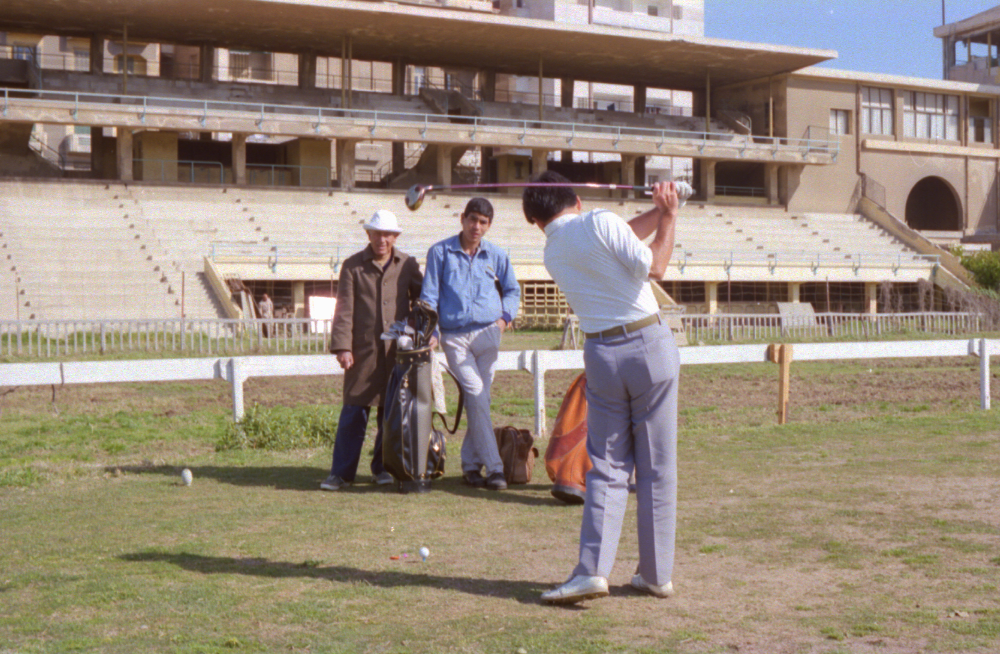

 私はスポーツが苦手なのであまりゴルフをしなかったが、前半は偶に行っていた。最初の頃はキャディーマスター やキャディーの服装はガラベイヤ（民族衣装）で小汚い服装をしていた。キャディーの小さい子は１０歳前後から いる。ある日知人のキャディーは８歳位で、自分の子供より小さいと言って驚いていた。この小さい子供でも重い ゴルフバックを引きずるようにして持って歩いていた。何度も通うと、馴染みのキャディーと回るようになる。最後の半年になると、私はアレキサンドリア巡りもし尽くし、する事もなくなってきたので毎週木曜日午後と金曜 日スポーツクラブに行くようになってしまった。ここは金曜日が丸１日休みで、前日木曜日は半日休みである。 帰国頃にキャディーマスターやキャディーの服装を観察すると、いつのまにかガラベイヤを着た者が居なくなって いる。みんな綺麗な洋服になり、ブランド物を着ていたりしている。 これは、如実に日本人が落としたお金のお陰であることを意味していた。アレキサンドリアに赴任した日本人は思 わぬところに経済波及効果に貢献していた。 余談であるが、ここのゴルフ場は人が少ないせいも有り早く回る人は金曜日には３ラウンドから４ラウンドする人 もいた。１ラウンドに１時間かからなかった。下手な私でも１時間強で終わってしまった、それで２ラウンドする こともあった。 ２００１年１１月２８日 記
|